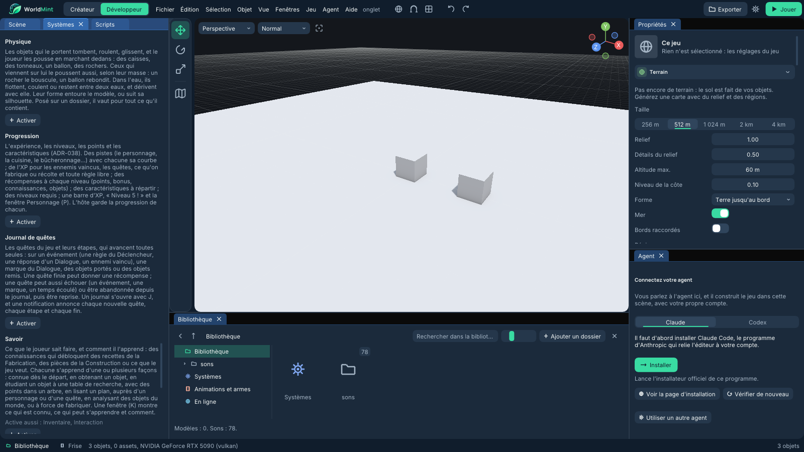

The game's systems and settings¶
Some things apply to the whole game, in all its scenes, and belong to no object: its Systems, its Controls, its Sound mixer and its Interface screens. Where they are depends on the editor's mode.
| Mode | Where to click |
|---|---|
| Developer (at first) | The Systems panel, on the left, next to Scene and Scripts. At the top of this panel, three buttons open the others: Game controls, Interface (the game's screens) and Game settings (the whole game's settings, with the sound mixer in the Sounds section). These three panels are closed at first; the Windows menu opens them too. Game settings opens on the right, next to Properties. |
| Developer, without free panels | If you turned off Free panels in Developer mode in the Preferences, everything is in the Game tab, on the left, in four sections: Controls, Sound mixer, Systems, Interface screens. |
| Creator | No panel to activate a system or change the controls: ask the agent, or switch to Developer mode. An object's drawer shows the main settings of its systems; ☰ > Game settings shows the game's title, the sky and the light. |

Controls¶
Game controls panel (or Controls section of the Game tab, without free panels).
One control per key of the game: Move forward, Jump, Attack... Scripts read its name, the player sees its label. For each one, a button shows its key (click, then press the key you want) and a list its gamepad button. Add a control creates a new one.
Everything is detailed in Game controls.
Sound mixer¶
Game settings panel, Sounds section (or Sound mixer section of the Game tab, without free panels).
Every sound of the game belongs to a group: Music, Effects, Ambience, Voice, Interface, and those you add with Add a group. For each one, a slider sets its volume and the speaker mutes it. Further down, Automatic ducking makes a group quieter while another plays (the music under the voices), and Muffled groups muffle a group all the time.
Everything is detailed in Sound and the sound mixer.
Systems¶
Systems panel, Systems section (or the same section of the Game tab, without free panels).
Systems are ready-made game rules: health, a health bar, combat, enemies, an inventory, harvesting, sounds, physics, passages between scenes... The full list, with every setting, is in the systems reference.
A system is used in two steps: you activate it for the game, then you place it on the objects that should carry it.
Activating a system¶
Under Add a system, each system not yet activated shows its name and what it does. Some need another one: "Also activates: Health". Click Activate.
Activated systems¶
At the top of the section, each activated system has its card, folded. A click on its name opens it:
- what it does;
- where it is placed: "Placed on 3 objects or groups", or "Placed on no object yet";
- its settings for the whole game (those not set object by object), which apply at once;
- "Its scripts were changed: they stay as they are" if a script of the system was changed by hand;
- Deactivate: removes it from the game. If it is placed on objects, the editor asks for confirmation ("Deactivate this system?") and says from how many objects it will be removed, with their values; Keep gives up. Ctrl+Z brings everything back. A system another one needs cannot be deactivated: the button says so on hover ("The “Basic combat” system needs it").
Update when opening¶
When you open a game made with an older version of the editor, its systems move to the editor's version: new scripts, settings kept. A system whose scripts you changed is left as it is, and the log says so.
This update is not something you did: Ctrl+Z does not undo it. At the top of the section, a line says so: "The systems Health, Health bar were updated when the game was opened". The Go back to the old version of the systems button puts back their old scripts, their settings, their screens and the systems the update had placed on objects; the rest of your work is kept. Ctrl+Z then redoes the update. The button goes away if you change the systems in the meantime, and when you open another scene.
Placing a system on objects¶
Once activated, a system that goes on objects appears in the Systems folder of the library. To place it:
- drag it from the library onto an object or a folder, in the scene list or in the 3D view; on the ground of a terrain, it goes on the Terrain;
- or double-click it in the library: it goes on the selection;
- or, in an object's Properties, Systems section, click + System.
Placed on a folder, a system applies to everything the folder contains: once for a whole troop of enemies. Its per-object settings are then changed in the properties: see An object's systems.
Interface screens¶
The screens the game shows on top of the scene: those the systems deliver (arranged by system), yours (My game), and what follows the 3D world (In the world). They are in the Interface panel (or Interface screens section of the Game tab, without free panels). A click opens one in the screen editor, above the 3D view; New screen creates one. Everything is detailed in The game interface.
The game's fonts¶
In the screen editor, choose a shape that has a text: the font list (Text tab of the ribbon, or Content section of the Format pane; in The game screen, at the start of the formatting bar) shows each font written in its own font, in two groups:
- WorldMint fonts: Inter and Manrope, shipped with the editor (free SIL OFL licence);
- My game's fonts: the ones you added.
At the bottom of the list:
- + Browse free fonts… opens the free font library of Fontsource (including Google Fonts). Search by name, filter by kind (sans serif, serif, handwriting, display, monospace): each name is written in its font. Add to my game downloads the font (regular, bold, italic when they exist) into your project's
polices/folder, with its licence. Offline, a message says so: nothing freezes. - + Import a font file… takes a
.ttfor.otffile from your computer. Write where it comes from and its licence, and tick "I confirm I have the right to use it in my game".
Choosing a font is one step: Ctrl+Z undoes it. Bold (B) and italic (I) use the font's real bold and italic files when it has them; otherwise they are imitated. The font goes with the exported game, with its licence. A file that is not a real font, or weighs more than 20 MB, is refused.